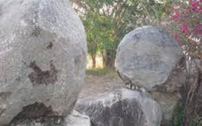
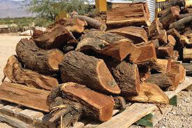
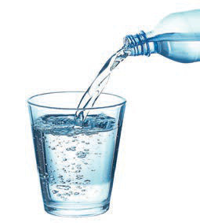

States of matter
There are various states of matter. In this section, you will learn about the three states of matter, which are solid, liquid and gas.
Solid
A solid is a state of matter that is firm and hard. Solids have a definite shape. Solids include stones, firewood and cooking pots as shown/described in Figure 1.



Liquid
Liquid has no fixed shape but takes the shape of the container it is placed in. When you pour water into a container, the water takes up space and takes the shape of that container. Examples of liquids include water, juice and soda. Figure 2 shows/describes a liquid being poured into a glass

Gas
Gas has no fixed shape and is usually lighter than solids and liquids. An example of a gas is air. Air is stored in solid objects.